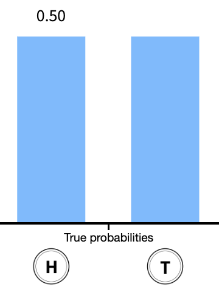

[1] 0.145998Lesson 5: Random variables and Binomial distribution
TB sections 3.1-3.2
Nicky Wakim
2025-10-13
Learning Objectives
- Define random variables and how they map to probability distributions
- Calculate the expected value and variance of discrete random variables
- Calculate the expected value and variance of linear combinations of discrete random variables
- Calculate probabilities for different events using a Binomial distribution
Where are we?

Learning Objectives
- Define random variables and how they map to probability distributions
- Calculate the expected value and variance of discrete random variables
- Calculate the expected value and variance of linear combinations of discrete random variables
- Calculate probabilities for different events using a Binomial distribution
Random variables
Random variable (RV or r.v.)
A random variable (r.v.) assigns numerical values (probability) to the outcome of a random phenomenon
Notation: A random variable is usually denoted with a capital letter such as \(X\), \(Y\), or \(Z\).
From Lesson 3: Probability distributions
Probability distribution
A probability distribution consists of all disjoint outcomes and their associated probabilities.
- We’ve already seen one in our heads and tails example
Rules for a probability distribution
A probability distribution is a list of all possible outcomes and their associated probabilities that satisfies three rules:
- The outcomes listed must be disjoint
- Each probability must be between 0 and 1
- The probabilities must total to 1

In the coin toss example…
We can start to define the probability distribution
Let’s define the coin flip with the random variable \(X\)
- Where \(X=1\) if we get a heads and \(X=0\) if we get a tails
We can create a table for the random variable and probabilities of each outcome:
Coin flip (\(x\)) \(x=1\) \(x=0\) Probability (\(P(X=x)\)) 0.5 0.5 - Note: I use \(X\) to refer to the random variable and \(x\) to refer to the realized value it takes
- Then we write \(P(X=x)\) to discuss the probability for each realized value (\(x\)) of the random variable (\(X\))
- Also note that the sum of the probabilities equal 1: \(\sum_{x=0}^1 P(X=x) = 1\)
Poll Everywhere Question 1
Let’s extend this to rolling a die
Example 1: Rolling a die
Suppose you roll a fair die. Let the random variable (r.v.) \(X\) be the outcome of the roll, i.e. the value of the face showing on the die.
- What is the probability distribution of the r.v. \(X\)?
Learning Objectives
- Define random variables and how they map to probability distributions
- Calculate the expected value and variance of discrete random variables
- Calculate the expected value and variance of linear combinations of discrete random variables
- Calculate probabilities for different events using a Binomial distribution
Discrete vs. continuous random variables
- Probability distributions are usually either discrete or continuous, depending on whether the random variable (RV) is discrete or continuous.
Discrete random variable (RV)
A discrete RV \(X\) takes on a finite number of values or countably infinite number of possible values.
Think:
- Number of heads in a set of coin tosses
- Number of people who have had chicken pox
Continuous random variable (RV)
A continuous RV \(X\) can take on any real value in an interval of values or unions of intervals.
Think:
- Height
- Blood pressure
Expectation of random variables
We call the mean of a random variable its expected value
The expected value is calculated as a weighted average
Expected value of a discrete random variable
If \(X\) takes on outcomes \(x_1\), …, \(x_k\) with probabilities \(P(X=x_1)\), …, \(P(X=x_k)\), the expected value of \(X\) is the sum of each outcome multiplied by its corresponding probability: \[\begin{aligned}\mu = E[X] = & x_1 P(X=x_1) + x_2 P(X=x_2) + \ldots + x_k P(X=x_k) \\ = & \sum_{i=1}^k x_iP(X=x_i) \end{aligned}\]
Back to rolling a die
Example 1: Rolling a die
Let’s go back to our fair die with RV \(X\) as the value of the face showing on the die.
What is the expected outcome of the RV \(X\)?
Now suppose the 6-sided die is not fair. How would we calculate the expected outcome?
| \(x\) | \(\mathbb{P}(X=x)\) |
|---|---|
| 1 | 0.10 |
| 2 | 0.20 |
| 3 | 0.05 |
| 4 | 0.05 |
| 5 | 0.25 |
| 6 | 0.35 |
Variability of random variables
Just like with data, the variability of a r.v. is described with its variance or standard deviation
Variance of a discrete random variable
If \(X\) takes on outcomes \(x_1\), …, \(x_k\) with probabilities \(P(X=x_1)\), …, \(P(X=x_k)\) and expected value \(\mu=E(X)\), then the variance of \(X\), denoted by \(\text{Var}(X)\) or \(\sigma^2\), is
\[\begin{align*} \text{Var}(X) &= (x_1-\mu)^2 P(X=x_1) + \cdots+ (x_k-\mu)^2 P(X=x_k) \\ &= \sum_{i=1}^{k} (x_i - \mu)^2 P(X=x_i) \end{align*}\]
Standard deviation of a discrete random variable
The standard deviation of \(X\), labeled \(SD(X)\) or \(\sigma\), is \[\sigma = SD(X) = \sqrt{\text{Var}(X)} \]
Back to rolling a die
Example 1: Rolling a die
Suppose you roll a fair 6-sided die. Let the random variable (r.v.)* \(X\) be the outcome of the roll, i.e. the value of the face showing on the die.
- Find the variance and standard deviation of \(X\).
| \(x\) | \(\mathbb{P}(X=x)\) |
|---|---|
| 1 | 1/6 |
| 2 | 1/6 |
| 3 | 1/6 |
| 4 | 1/6 |
| 5 | 1/6 |
| 6 | 1/6 |
\[\begin{align*} \text{Var}(X) &= \sum_{i=1}^{6} (x_i - \mu)^2 P(X=x_i) \\ &= (1-3.5)^2 \frac{1}{6} + (2-3.5)^2 \frac{1}{6} + \\ \\ \\ \\ \\ \\ \\ \\ &= 2.917 \\ \\ \text{SD}(X) &= \end{align*}\]
Learning Objectives
- Define random variables and how they map to probability distributions
- Calculate the expected value and variance of discrete random variables
- Calculate the expected value and variance of linear combinations of discrete random variables
- Calculate probabilities for different events using a Binomial distribution
Linear combinations of random variables
Linear combinations of random variables
If \(X\) and \(Y\) are random variables and \(a\) and \(b\) are constants, then \[aX + bY\] is a linear combination of the random variables.
Theorem: Expected value of a linear combination of random variables
If \(X\) and \(Y\) are random variables and \(a\) and \(b\) are constants, then \[E(aX + bY) = aE(X) + bE(Y)\] and \[E(aX + b) = aE(X) + b\]
Poll Everywhere Question2
Keep rolling dice!
Example: Expected money for rolling 3 dice
Let the random variables \(X_1, X_2, X_3\) be the values shown on rolls for 2 fair 6-sided dice and 1 unfair die (as described in our previous example). Suppose you are given in dollars the amount of the first roll, plus twice the value of the second roll, plus 4 times the value of the unfair die roll. How much money do you expect to get?
Variance of a linear combination
Theorem: Variance of a linear combination of random variables
If \(X\) and \(Y\) are independent random variables and \(a\) and \(b\) are constants, then \[\text{Var}(aX +bY) = a^2\text{Var}(X) + b^2\text{Var}(Y)\]
Keep keep rolling dice!
Example: Expected money for rolling 3 dice
Let the random variables \(X_1, X_2, X_3\) be the values shown on rolls for 2 fair 6-sided dice and 1 unfair die (as described in our previous example). Suppose you are given in dollars the amount of the first roll, plus twice the value of the second roll, plus 4 times the value of the unfair die roll. What are the variance and standard deviation of the amount you get from the 3 rolls?
Learning Objectives
- Define random variables and how they map to probability distributions
- Calculate the expected value and variance of discrete random variables
- Calculate the expected value and variance of linear combinations of discrete random variables
- Calculate probabilities for different events using a Binomial distribution
Binomial random variable
- One specific type of discrete random variable is a binomial random variable
Binomial random variable
\(X\) is a binomial random variable if it represents the number of successes in \(n\) independent replications (or trials) of an experiment where
- Each replicate has two possible outcomes: either success or failure
- The probability of success is \(p\)
- The probability of failure is \(q=1-p\)
A binomial random variable takes on values \(0, 1, 2, \dots, n\).
If a r.v. \(X\) is modeled by a Binomial distribution, then we write in shorthand \(X \sim \text{Binom}(n,p)\)
Quick example: The number of heads in 3 tosses of a fair coin is a binomial random variable with parameters \(n = 3\) and \(p = 0.5\).
Poll Everywhere Question 3
Bernoulli distribution
- When \(n=1\), aka we have a single trial, we give a different name to the random variable: Bernoulli
Bernoulli random variable
Bernoulli random variable. If \(X\) is a random variable that takes value 1 with probability of success \(p\) and 0 with probability \(1-p\) (or \(q\)), then \(X\) is a Bernoulli random variable.
We call the probability of success \(p\) the parameter of the Bernoulli distribution.
If a r.v. \(X\) is modeled by a Bernoulli distribution, then we write in shorthand \(X \sim \text{Bernoulli}(p)\) or \(X \sim \text{Bern}(p)\)
Mean and SD of a Bernoulli r.v.
If* \(X\) is a Bernoulli r.v. with probability of success \(p\), then \(E(X) = p\) and \(\text{Var}(X) = p(1-p)\)
Relationship between Bernoulli and Binomial1
The Bernoulli distribution is a special case of the Binomial distribution where \(n=1\)
- Specifically: \[\text{Binomial}(1, p) = \text{Bernoulli}(p) \]
To get a Binomial distribution, we simply extend the scenario from a single trial to multiple independent trials.
- If we conduct \(n\) independent Bernoulli trials with the same success probability \(p\), the total number of successes across these \(n\) trials will follow a Binomial distribution
Quick example:
- Bernoulli: If you flip a coin once, with probability \(p=0.5\) of landing heads, that is a Bernoulli trial.
- Binomial: If you flip the coin 5 times, and you want to know how many times it will land heads, the number of heads will follow a Binomial distribution with parameters \(n=5\) and \(p=0.5\)
Binomial distribution
Distribution of a Binomial random variable
Let \(X\) be the total number of successes in \(n\) independent trials, each with probability \(p\) of a success. Then probability of observing exactly \(k\) successes in \(n\) independent trials is
\[P(X = x) = \binom{n}{x} p^x (1-p)^{n-x}, x= 0, 1, 2, \dots, n \]
The parameters of a binomial distribution are \(p\) and \(n\).
If a r.v. \(X\) is modeled by a binomial distribution, then we write in shorthand
Mean and variance of a Binomial r.v
If \(X\) is a binomial r.v. with probability of success \(p\), then \(E(X) = np\) and \(\text{Var}(X)=np(1-p)\)
Binomial distribution: R commands
R commands with their input and output:
| R code | What does it return? |
|---|---|
rbinom() |
returns sample of random variables with specified binomial distribution |
dbinom() |
returns probability of getting certain number of successes |
pbinom() |
returns cumulative probability of getting certain number or less successes |
qbinom() |
returns number of successes corresponding to desired quantile |
Binomial distribution example (1/5)
Vaccinated people testing positive for Covid-19
About 25% of people that test positive for Covid-19 are vaccinated for Covid-19. Suppose 10 people have tested positive for Covid-19 (independently of each other). Let \(X\) denote the number of people that are vaccinated among the 10 that tested positive.
What is the expected value of \(X\)?
What is the SD of \(X\)?
What is the probability that exactly 4 of the 10 people that tested positive are vaccinated?
What is the probability that at most 3 of the 10 people that tested positive are vaccinated?
What is the probability that at least 5 of the 10 people that tested positive are vaccinated?
Binomial distribution example (2/5)
Vaccinated people testing positive for Covid-19
About 25% of people that test positive for Covid-19 are vaccinated for Covid-19. Suppose 10 people have tested positive for Covid-19 (independently of each other). Let \(X\) denote the number of people that are vaccinated among the 10 that tested positive.
What is the expected value of \(X\)?
What is the SD of \(X\)?
Binomial distribution example (3/5)
Vaccinated people testing positive for Covid-19
About 25% of people that test positive for Covid-19 are vaccinated for Covid-19. Suppose 10 people have tested positive for Covid-19 (independently of each other). Let \(X\) denote the number of people that are vaccinated among the 10 that tested positive.
- What is the probability that exactly 4 of the 10 people that tested positive are vaccinated?
\[P(X=4) = {10 \choose 4} 0.25^2 (1-0.25)^{10-4} = 0.146\]
- In general, for \(P(X=k)\) we code:
dbinom(x = k, size = n, prob = p)
Binomial distribution example (4/5)
Vaccinated people testing positive for Covid-19
About 25% of people that test positive for Covid-19 are vaccinated for Covid-19. Suppose 10 people have tested positive for Covid-19 (independently of each other). Let \(X\) denote the number of people that are vaccinated among the 10 that tested positive.
- What is the probability that at most 3 of the 10 people that tested positive are vaccinated?
\[\begin{aligned} P(X \leq 3) = & P(X =0) + P(X = 1) + P(X =2) + P(X = 3) \\ = &{10 \choose 0} 0.25^0 (0.75)^{10} + {10 \choose 1} 0.25^1 (0.75)^{9} + {10 \choose 2} 0.25^2 (0.75)^{8}+ {10 \choose 3} 0.25^3 (0.75)^{7} \\ = & 0.7758 \end{aligned}\]
- In general, for \(P(X \leq k)\) we code:
pbinom(q = k, size = n, prob = p)withlower.tail = Tas a default option
Binomial distribution example (5/5)
Vaccinated people testing positive for Covid-19
About 25% of people that test positive for Covid-19 are vaccinated for Covid-19. Suppose 10 people have tested positive for Covid-19 (independently of each other). Let \(X\) denote the number of people that are vaccinated among the 10 that tested positive.
- What is the probability that at least 5 of the 10 people that tested positive are vaccinated?
\[\begin{aligned} P(X \geq 5) = & P(X =5) + P(X = 6) + P(X =7) + P(X = 8) + P(X = 9)+ P(X = 10) \\ = &{10 \choose 5} 0.25^5 (0.75)^{5} + {10 \choose 6} 0.25^6 (0.75)^{4} + \ldots + {10 \choose 10} 0.25^10 (0.75)^{0}\\ = & 0.7758 \end{aligned}\]
[1] 0.07812691[1] 0.07812691- In general, for \(P(X > k)\) we code:
pbinom(q = k, size = n, prob = p, lower.tail = F)
Resources!
Lesson 5 Slides